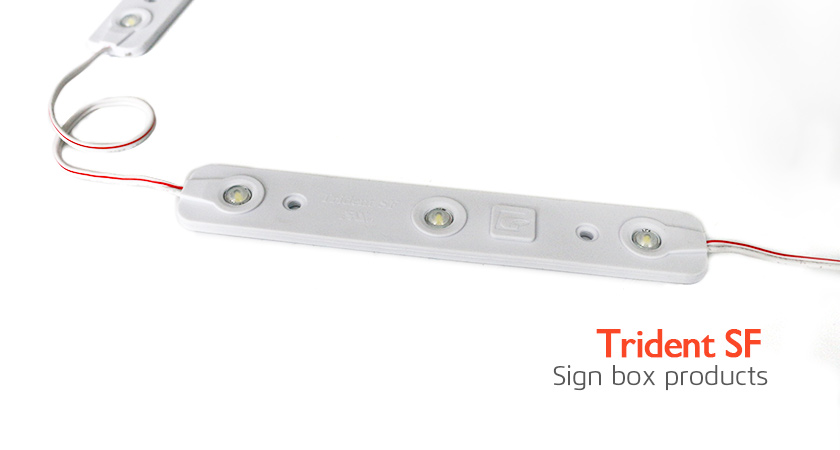

<div class="product-details margit-top110">
	<div class="container">
		<div>
			
		</div>
		<div class="row bottom-line">
			<div class="col-xs-12 col-sm-7 col-md-7">
				<p>
					With brightness and efficiency unparalleled, the uniquely engineered Trident Stick is the fastest and easiest solution to retro-fitting fluorescent sign cabinets. Undeniably one of the most energy efficient, and cost effective LED technologies available today.
					Available in single-face and double-face options.
				</p>
			</div>
			<div class="col-xs-12 col-sm-5 col-md-5">
				<a class="download_layout" download="" href="download_files/2016-G2G-Catalog.pdf">Download The Product Catalog</a>
			</div>
		</div>
		<div class="row product-features">
			<h3 class="specification">LED MODULE FEATURES</h3>
			<p>
				• For sign boxes 3"-10" in depth
				<br> • Available in Single and Double-faced modules
				<br> • 12 VDC Constant Current Technology (CCT)
				<br> • IP 67 wet-location
				<br> • UL and cUL Recognized
			</p>

		</div>

		<h3 class="specification">LED MODULE SPECIFICATIONS</h3>
		<div>
			
		</div>
		<h3 class="specification">LED MODULE DIMENSIONS</h3>
		<div>
			
		</div>
		<div>
			
		</div>

	</div>
</div>